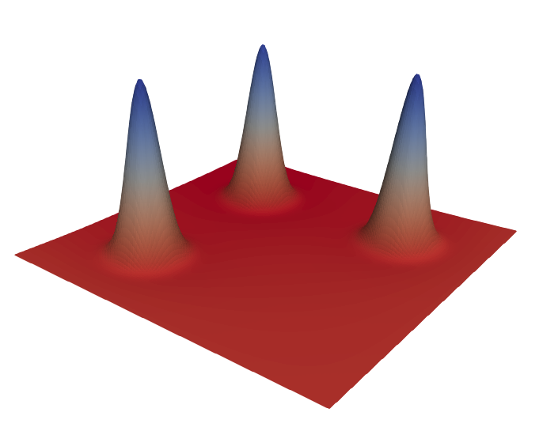

Helmholtz equation
In this example, we want to solve a (variant of) of the Helmholtz equation. The example is inspired by an dealii step_7 on the standard square.
\[ - \Delta u + u = f\]
With boundary conditions given by
\[u = g_1 \quad x \in \Gamma_1\]
and
\[n \cdot \nabla u = g_2 \quad x \in \Gamma_2\]
Here Γ₁ is the union of the top and the right boundary of the square, while Γ₂ is the union of the bottom and the left boundary.

We will use the following weak formulation:
\[\int_\Omega \nabla δu \cdot \nabla u \, d\Omega + \int_\Omega δu \cdot u \, d\Omega - \int_\Omega δu \cdot f \, d\Omega - \int_{\Gamma_2} δu g_2 \, d\Gamma = 0 \quad \forall δu\]
where $δu$ is a suitable test function that satisfies:
\[δu = 0 \quad x \in \Gamma_1\]
and $u$ is a suitable function that satisfies:
\[u = g_1 \quad x \in \Gamma_1\]
The example highlights the following interesting features:
- There are two kinds of boundary conditions, "Dirichlet" and "Von Neumann"
- The example contains boundary integrals
- The Dirichlet condition is imposed strongly and the Von Neumann condition is imposed weakly.
using Ferrite
using Tensors
using SparseArrays
using LinearAlgebra
const ∇ = Tensors.gradient
const Δ = Tensors.hessian;
grid = generate_grid(Quadrilateral, (150, 150))
ip = Lagrange{RefQuadrilateral, 1}()
qr = QuadratureRule{RefQuadrilateral}(2)
qr_facet = FacetQuadratureRule{RefQuadrilateral}(2)
cellvalues = CellValues(qr, ip);
facetvalues = FacetValues(qr_facet, ip);
dh = DofHandler(grid)
add!(dh, :u, ip)
close!(dh)DofHandler{2, Grid{2, Quadrilateral, Float64}}
Fields:
:u, Lagrange{RefQuadrilateral, 1}()
Dofs per cell: 4
Total dofs: 22801We will set things up, so that a known analytic solution is approximately reproduced. This is a good testing strategy for PDE codes and known as the method of manufactured solutions.
function u_ana(x::Vec{2, T}) where {T}
xs = (
Vec{2}((-0.5, 0.5)),
Vec{2}((-0.5, -0.5)),
Vec{2}((0.5, -0.5)),
)
σ = 1 / 8
s = zero(eltype(x))
for i in 1:3
s += exp(- norm(x - xs[i])^2 / σ^2)
end
return max(1.0e-15 * one(T), s) # Denormals, be gone
end;
dbcs = ConstraintHandler(dh)ConstraintHandler:
Not closed!The (strong) Dirichlet boundary condition can be handled automatically by the Ferrite library.
dbc = Dirichlet(:u, union(getfacetset(grid, "top"), getfacetset(grid, "right")), (x, t) -> u_ana(x))
add!(dbcs, dbc)
close!(dbcs)
update!(dbcs, 0.0)
K = allocate_matrix(dh);
function doassemble(
cellvalues::CellValues, facetvalues::FacetValues, K::SparseMatrixCSC, dh::DofHandler
)
b = 1.0
f = zeros(ndofs(dh))
assembler = start_assemble(K, f)
n_basefuncs = getnbasefunctions(cellvalues)
fe = zeros(n_basefuncs) # Local force vector
Ke = zeros(n_basefuncs, n_basefuncs) # Local stiffness mastrix
for (cellcount, cell) in enumerate(CellIterator(dh))
fill!(Ke, 0)
fill!(fe, 0)
coords = getcoordinates(cell)
reinit!(cellvalues, cell)First we derive the non boundary part of the variation problem from the destined solution u_ana
\[\int_\Omega \nabla δu \cdot \nabla u \, d\Omega + \int_\Omega δu \cdot u \, d\Omega - \int_\Omega δu \cdot f \, d\Omega\]
for q_point in 1:getnquadpoints(cellvalues)
dΩ = getdetJdV(cellvalues, q_point)
coords_qp = spatial_coordinate(cellvalues, q_point, coords)
f_true = -LinearAlgebra.tr(hessian(u_ana, coords_qp)) + u_ana(coords_qp)
for i in 1:n_basefuncs
δu = shape_value(cellvalues, q_point, i)
∇δu = shape_gradient(cellvalues, q_point, i)
fe[i] += (δu * f_true) * dΩ
for j in 1:n_basefuncs
u = shape_value(cellvalues, q_point, j)
∇u = shape_gradient(cellvalues, q_point, j)
Ke[i, j] += (∇δu ⋅ ∇u + δu * u) * dΩ
end
end
endNow we manually add the von Neumann boundary terms
\[\int_{\Gamma_2} δu g_2 \, d\Gamma\]
for facet in 1:nfacets(cell)
if (cellcount, facet) ∈ getfacetset(grid, "left") ||
(cellcount, facet) ∈ getfacetset(grid, "bottom")
reinit!(facetvalues, cell, facet)
for q_point in 1:getnquadpoints(facetvalues)
coords_qp = spatial_coordinate(facetvalues, q_point, coords)
n = getnormal(facetvalues, q_point)
g_2 = gradient(u_ana, coords_qp) ⋅ n
dΓ = getdetJdV(facetvalues, q_point)
for i in 1:n_basefuncs
δu = shape_value(facetvalues, q_point, i)
fe[i] += (δu * g_2) * dΓ
end
end
end
end
assemble!(assembler, celldofs(cell), Ke, fe)
end
return K, f
end;
K, f = doassemble(cellvalues, facetvalues, K, dh);
apply!(K, f, dbcs)
u = Symmetric(K) \ f;
vtk = VTKGridFile("helmholtz", dh)
write_solution(vtk, dh, u)
close(vtk)
println("Helmholtz successful")Helmholtz successfulThis page was generated using Literate.jl.